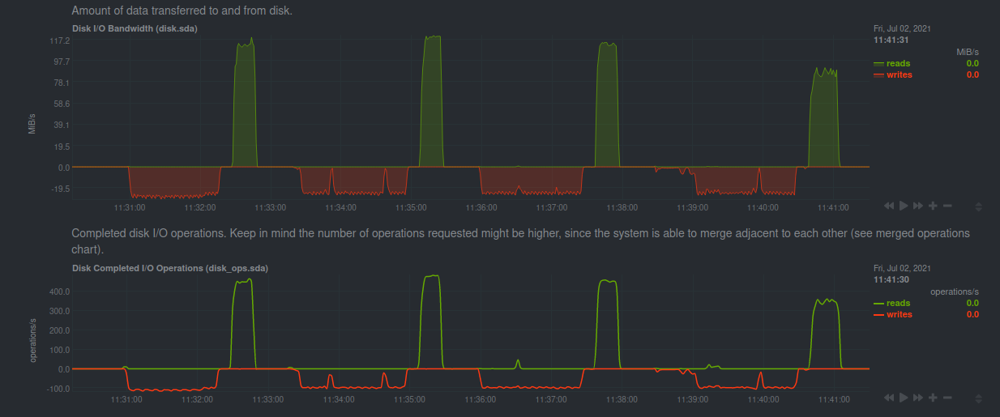

I bought myself a 5TB external Hard-drive from Seagate. I am going to use this for my home-server build. The computer will the the Raspberry-Pi which I already have. It's time to up my seeding game. Before installing it on my server I wanted to run some benchmarks on it.
What/Why Benchmark ?¶
In this Benchmark I will be comparing the performance of the HDD in various filesystem configurations on the Raspberry Pi. I want to run an encrypted setup and I also need a way in which I can just add new drives later on and not have to repartition the entire thing.
My main concern is that the Raspberry is too low powered to run an encrypted btrfs setup. I want to run btrfs as it makes adding new drives to your setup very very easy.
The test will be done on my laptop which will be the control, and then on the Pi I will be running an entire set of different tests which will look at CPU and temperature as well.
I will also use a SanDisk 128GB USB drive and measure its performance just for fun.
The Setup¶
There are two drives. One is a 128GB SanDisk USB pen-drive, the other is a Seagate 5TB Backup Plus external 2.5 inch HDD.
Each drive is partitioned into 4 partition of equal size. Then filesystems are built on these partitons.
I want to test two file-systems; btrfs and ext4.
I want to test full disk encryption using Luks along with these file-systems.
I already know that btrfs is going to be slower that ext4, I just want to know by how much.
The following combinations were created
| part type | allocation | label |
| ------------ | ---------- | --------- |
| ext4 | 25% | ext4Only |
| luks + ext4 | 25% | ext4Lks |
| btrfs | 25% | btrfsOnly |
| luks + btrfs | 25% | btrfsLuks |
This is the output from parted
(parted) print
Model: SanDisk Ultra USB 3.0 (scsi)
Disk /dev/sda: 123GB
Sector size (logical/physical): 512B/512B
Partition Table: msdos
Disk Flags:
Number Start End Size Type File system Flags
1 1049kB 30.8GB 30.8GB primary ext4 lba
2 30.8GB 61.5GB 30.8GB primary lba
3 61.5GB 92.3GB 30.8GB primary btrfs lba
4 92.3GB 123GB 30.8GB primary lba
We build a btrfs filesystem(s) in single data-mode. This makes sure that btrfs as a file-system is not being too smart and just writes data into disks as they arrive.
In the partitions where encryption was set-up we first build a LUKs encrypted volume and then build the filesystem on top of it.
Then we mount all of the partitions under /mnt/. It looks like this
~ ❯❯❯ lsblk /dev/sda
NAME MAJ:MIN RM SIZE RO TYPE MOUNTPOINT
sda 8:0 1 114.6G 0 disk
├─sda1 8:1 1 28.7G 0 part /mnt/ext4Only
├─sda2 8:2 1 28.7G 0 part
│ └─ext4Luks 253:4 0 28.7G 0 crypt /mnt/ext4Luks
├─sda3 8:3 1 28.7G 0 part /mnt/btrfsOnly
└─sda4 8:4 1 28.7G 0 part
└─btrfsLuks 253:3 0 28.7G 0 crypt /mnt/btrfsLuks
I am using this tool called fio for running the benchmark and I am using netdata for reporting the state of the system and for displaying fancy visualizations.
Using fio, you can run multiple tests, but the one I focused on were the sequential read and write tests. The configuration for fio is as follows
# sudo fio --bs=4k --rw=read --direct=1 --ioengine=libaio --size=2G --name=test --iodepth=64 --filename=<destination>`
I wrote a script that would perform a write test, followed by a read test on each of the 4 partitions going serially (i.e. ext4Only, ext4Luks, btrfsOnly, btrfsLuks).
Benchmark Results¶
Sharing the screenshots of the Netdata dashboard highlighting the disk I/O for tests run on my laptop (the control).
For tests run on the Raspberry-Pi I was also looking at CPU, Temp and Disk I/O. Those charts are also present below.
The results are summarized in a table at the end.
I ran the tests with block-size as 4K initially, but then discovered that changing it to 4M was giving me better throughput.
The charts below are for the 4M tests. Total data being written and read from the disk for each run was 2GB.
The data-dump will have all the results for you to look at if you want to.
There is something really interesting wrt the Raspberry Pi when we use a higher block size. A section will be there that talks about it.
Laptop 128Gb Usb drive¶
Laptop 5TB HDD¶
Raspberry Pi 128GB Usb drive¶

Disk I/O (4M bs)
CPU Utilization and Load Average (4M bs)
Temp (4M bs)
Disk I/O (4k bs)
CPU Utilization and Load Average (4k bs)
Raspberry Pi 5TB hdd¶
Disk I/O
CPU Utilization and Load Average
Temp
Results Summary¶
The units are MB/s and the format is Write/Read
Laptop¶
| Device | Storage Device | Block Size | ext4Only | ext4Luks | btrfsOnly | btrfsLuks |
| ------ | -------------- | ---------- | -------- | -------- | --------- | --------- |
| Laptop | HDD | 4M | 104/124 | 117/118 | 101/96.5 | 82.5/82.2 |
| | | 4k | 52.1/106 | 20.4/106 | 31.2/90.3 | 20.2/85.7 |
| | USB | 4M | 27.1/159 | 20.4/159 | 27.1/159 | 25.8/159 |
| | | 4k | 27.1/129 | 21.3/127 | 19/117 | 19.9/102 |
Rpi¶
| Device | Storage Device | Block Size | ext4Only | ext4Luks | btrfsOnly | btrfsLuks |
| ------ | -------------- | ---------- | --------- | --------- | --------- | --------- |
| RPI | HDD | 4M | 126/123 | 77.8/109 | 97.4/95 | 57.7/80 |
| | | 4k | 23.8/58.8 | 20.9/47.6 | 19.2/48.4 | 21.5/40.8 |
| | USB | 4M | 28.2/115 | 22.4/120 | 24.9/116 | 18.2/89.2 |
| | | 4k | 21.1/108 | 13.9/82.6 | 18.7/84.8 | 13.4/58.6 |
Observations¶
- On a laptop the file-systems do not really matter as long as the device is fairly powerful. This is illustrated in chart 1. I can basically max out the reads/writes to the USB drive.
- Btrfs is slower, which is expected. Adding encryption slows everything down across the spectrum. Again, nothing unexpected.
- The HDD performance starts degrading as we move to a more complex system.
- Vanilla ext4 is very simple on the Raspberry-Pi
- Adding encryption and btrfs makes things bad and performance starts to degrade properly.
- Reading and Writing to encrypted drives is very CPU intensive.
- Sequential reads from encrypted devices causes a significant rise in CPU temp for the Raspberry Pi. This is almost as much as performing a stress test on the CPUs.
- Changing Block Size from 4k to 4M has significant improvement, though it causes a huge rise in CPU Utilisation for the USB on the Raspberry PI.
- Overall anything but vanilla ext4 has quite significant CPU load.
- If you notice carefully then you should see that the writes are not zeroed in-between the tests. This is because ext4 has a lazyinit feature which allows for faster creation of the filesystem by not initializing all the inode tables at the start (i.e. during mkfs). Instead it defers the initialization to a background process when the filesystem is mounted and uses roughly 10% of the available bandwidth. Btw, initializing the inode tables basically means that when a new filesystem is created, the exisiting regions of the inode tables must be reset to
0.
What is Block Size? Why is it so important ?¶
The operating system talks to block I/O devices using get/set operations. These are called IOPS.
A block is simply the amount of data that the OS can read during a single operation.
Thus throughput is basically IOPS * block_size.
I ran the tests with bs set as 4k and was surprised that the reported values were not as high. Infact they were a lot lower than the disk speed I was getting from a pure rsync workload. During one such run, I happened to look at the netdata dashboard and discovered that the operations/s was much lower for the rsync workload than the fio workload, even though rsync had a much larger throughput. This gave me the idea that we can in-fact change the bs to get much better results.
Here in this photo we can clearly see the difference that block_size causes. The first write is done using a higher block_size which explains the lower operations per second along with the higher throughput; similarly the second write has lower throughput along with higher operations per second. This is characteristic for lower block_size.
Check this to get a better understanding of block size.
Conclusion¶
I will probably just LVM this drive and use ext4. Maybe use btrfs when I have a x86 processor. Thanks.
Will keep sharing more details about the home-server build.
This is the Github link to the entire data-dump for the benchmark.